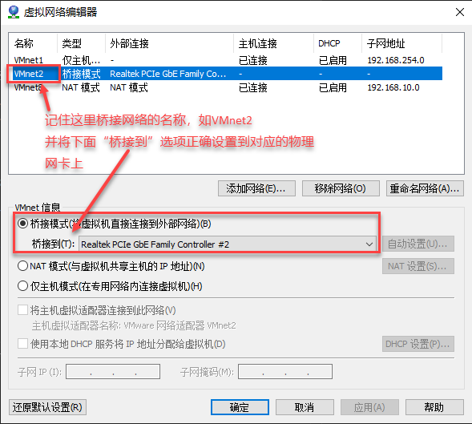

Linux程序开发指南 - 基础操作及全命令行工作
目标
掌握Linux系统命令行的基本操作方法和进阶的部分技巧 最终达到能够在纯命令行的环境下，完成日常程序开发的水平
参考资料
TODO 具体章节待定
基本入门： 《鸟哥的私房菜 服务器版》 从系统安装到基本的PC系统使用介绍，推荐0基础学习 一个GitHub上注明的命令行教程： https://github.com/jlevy/the-art-of-command-line/blob/master/README-zh.md 经典命令行技巧汇总，强烈推荐 工具书 《Linux命令行与shell脚本编程大全》
前几章内容同样适合入门，介绍纯命令行的操作 后续shell脚本编程等会持续用到该书
学习内容
1.系统安装
参考网上的文档，在虚拟机中安装Ubuntu系统，用于系统学习和后续的课程。
相关软件包在部门NAS服务器中均可以下载到，使用SVN账号密码登陆：
深圳NAS服务器 ftp://nas-wh.cet-dev.org
武汉NAS服务器 ftp://nas-wh.cet-dev.org
软件要求
- VMWare Workstation 14.0
/Software/系统盘及常用软件/Linux安装盘/ - Ubuntu Server 18.04.1 64bit
/Software/系统盘及常用软件/VMWare虚拟机/ - SSH工具：MobaXterm
/Software/调试工具/
安装要点
- 我们采用服务器版系统，不带桌面环境，只能命令行操作，便于养成全命令行操作的习惯
- VMWare设置要点：
- 如电脑具有两块物理网卡，请在虚拟机中添加两块网卡。其中第一块使用NAT模式，用于和Windows系统互联；第二块使用桥接模式，用于后续实验中与装置互联，需要在VMWare的
编辑-虚拟网络编辑器中，指定桥接网卡对应的物理网卡：
 - 虚拟机硬件配置，CPU推荐单CPUN核，与实际物理核心数移植；内存推荐2-4GB；硬盘推荐40GB+
- 在
虚拟机-设置-选项中，启用共享文件夹功能，并将主机中D:、E:等盘符共享至虚拟机：

- 如电脑具有两块物理网卡，请在虚拟机中添加两块网卡。其中第一块使用NAT模式，用于和Windows系统互联；第二块使用桥接模式，用于后续实验中与装置互联，需要在VMWare的
- 系统安装要点：
- 硬盘分区采用默认设置
- IP地址先采用默认设置
- 选择服务器安装类型时，不选择直接下一步跳过，进行最小安装
- 设置一个较简单的如
ceiec的密码，方便后面经常使用sudo输入
善用Tab键
Linux中，命令行shell普遍具有代码/路径自动提示功能，遇到很长不好输入的路径/文件名，遇到记不住的命令，都可以经常使用TAB键进行提示。按一下TAB没反应，按两下出现所有匹配。
TAB键是Linux用户除了空格和回车外使用最频繁的按键，一定一定要养成使用TAB键代替自己手动逐个字符输入的好习惯。
安装VMWare Tools
VMWare Tools是安装在虚拟机中的VMWare驱动和工具，用于改善虚拟机性能、实现虚拟机和宿主机的文件共享等功能。考虑到本阶段学员的命令行水平还很低，直接给出安装流程。
首先在VMWare中，点击虚拟机 - 重新安装VMWare Tools...，接着在虚拟机内，执行如下命令进行安装：
# 创建一个/mnt/cdrom目录用于挂载光驱
sudo mkdir /mnt/cdrom
# 挂载光驱到/mnt/cdrom目录
sudo mount -t iso9660 /dev/cdrom /mnt/cdrom
# 复制安装包到当前用户home目录，解压并进入该目录
cp VMwareTools-10.2.0-7259539.tar.gz ~
cd ~
tar xzvf VMwareTools-10.2.0-7259539.tar.gz
cd vmware-tools-distrib/
# 启动安装
sudo ./vmware-install.pl
# 后面所有提示问题，全部按回车确认，直到安装结束
# ls查看/mnt/hgfs目录，如存在上面VMWare虚拟机中配置的文件夹共享盘符
# 我们认为VMWare Tools安装成功
ls /mnt/hgfs
2.配置IP地址
系统安装后，应能正常登陆。接下来要做的第一步是配置IP地址，让虚拟机能够上网。
上网是安装必备软件的基本要求，如不能上网，采用离线cd安装，可能会有各种坑，暂不采用这种方式。
准备上网环境
Linux是一个开源的操作系统，是基于互联网进行广泛的全球合作的产物。安装下载软件需要网络，学习资料来源于网络，权威文档来源于网络。故我们在学习、使用Linux系统时，互联网的连接是必不可少的。没有网络，我们的学习效率、工作效率都会受到极大的影响。
联系网管，或自行通过上网机桥接等方式，创造一个能上外网的环境。
- 建议1：双网卡上网，通过第二张
桥接网卡与上网机/路由器连接，实现上网 - 建议2：宿主机通过各种办法上网后，通过第一张
NAT网卡，虚拟机自然可以上网 - 建议3：单网卡，虚拟机单网卡使用桥接模式，与唯一物理网卡绑定，将上网路由器、宿主机、虚拟机设置在同一个私有子网地址下，实现上网和与宿主机通讯两不误
建立正确的上网条件后，可以开始设置虚拟机ubuntu系统的IP地址。
- 方案1: 宿主机能上网，双网卡。第一张网卡NAT共享宿主机的外网，使用DHCP自动获取IP；第二张桥接网卡专门和装置连接，使用静态IP地址
- 方案2：宿主机能上网，单网卡。NAT模式共享宿主机的外网，Linux系统内单一网卡，使用静态IP模式设置两个IP
- 方案3：宿主机不能上网，通过双网卡桥接网卡上网。第一张网卡NAT模式，使用静态IP地址（192.168.10.xxx），用于和宿主机连接；第二张桥接网卡负责上外网和装置连接，使用静态IP地址，设置默认路由。
- 方案4：宿主机不能上网，通过桥接模式和物理网卡连接。路由器、宿主机、虚拟机均使用静态IP地址，一个网卡设置多个IP，实现上内网，上外网，连装置的功能。（推荐）
Ubuntu 18 Server版，网络参数配置使用了netplan程序进行管理。
这里有一篇比较完整介绍netplan的文章，推荐阅读：
https://linux.cn/article-10095-1.html?pr
对于netplan我们要注意几点：
- 在系统学习Linux下最强大的文本编辑器vim前，我们推荐使用内置的简单编辑器
nano进行文本编辑。nano界面下方有命令提示，如^X Exit，其中^是CTRL键的简写 - 编辑配置文件应采用
sudo使用管理员权限执行，如
sudo nano /etc/netplan//etc/netplan/50-cloud-init.yaml
- 配置文件采用的yaml格式，是近年来继json后的另一种标记描述语言，用于配置文件、描述文件很合适，有兴趣的可以进一步了解一下
- 修改完yaml文件后，使用
sudo netplan apply命令使配置生效 - 使用
ip a或ifconfig查看IP地址 - 使用
route -n查看0.0.0.0对应的网关来确定默认网关配置 - 系统DNS服务器地址在yaml里设置，已无法在
/etc/resolve.conf文件中看到
配置IP地址是使用Ubuntu系统的第一步，系统使用也不熟悉，可能碰到很多困难，需要上网搜索、自己研究解决客服。
3.安装软件
Ubuntu系统采用apt-get工具进行软件安装，系统自动从网络上的软件仓库获取软件，自动安装到系统。相比二十年前的纯手动软件安装来说，已经极其简单了。安装软件的过程通常可以分为如下几个步骤：
sudo nano /etc/apt/source.list # 编辑软件更新源列表，通常我们将其改为阿里云服务器
sudo apt-get update # 从服务器拉取最新的软件包列表
sudo apt-get install vim # 安装vim编辑器
# 后续安装其他软件，一般不需要执行前两步，除非更新了源地址
学会了安装软件的方法，你可以在Linux世界里畅游了。我们后面的开发、编译，同样需要大量的第三方软件的支撑。
4.通过SSH连接虚拟机
SSH是Linux系统下的加密远程终端，可以提供加密的数据通道、文件传输通道、端口透传、图形界面透传等大量的功能。
虚拟机服务安装
服务器版的Ubuntu Server系统已经预装了OpenSSH Server软件，我们可以直接使用。
通过netstat -ant命令，确认是否有0.0.0.0:22的监听端口，可以确认SSH Server服务的状态。
如没有，可通过sudo apt-get install openssh-server命令安装服务。
Windows客户端
Windows下有大量的SSH客户端，比如SecureCRT、Putty，但这里强烈推荐采用的是MobaXterm软件。原因不多说，就是功能强大，且支持语法高亮显示，非常适合日常高强度的命令行远程操作。
软件连接服务器后，提示输入用户名和密码，成功登陆后，除了出现Shell提示符外，软件左侧还提供了基于SFTP协议的文件传输服务，也可以很方便地进行日常文件下载、上传操作。
5.学习命令
Linux日常使用的命令不多，通过日常的强制性练习，杜绝使用图形界面，通常在几天内可以形成初步的习惯，在高强度的使用一个月左右，可以完全入门达到熟练应用的程度。
推荐的学习书籍包括：《鸟哥的私房菜 服务器版》、《Linux命令行与Shell脚本编程》等，同时最重要最方便的资料，有两个，比翻书更快：
- 互联网
- man和help
遇到日常操作不清楚的，直接上网搜索即可（这也是为什么Linux学习前期需要方便的上网环境的原因之一）。同时还有Linux内置的方便的帮助系统：man命令和--help参数，任何命令都提供了--help的参数，可以方便快速的查看命令的使用方法。如果想进一步了解细节和范例，通过man <command>命令可以查阅详细的命令手册（Manual）
Linux基本命令分为如下几大类：
- 目录管理、文件复制和移动 ls、cd、cp、rm、mkdir、rmdir……
- 搜索文件和内容 find、grep（重要）
- 文件查看和编辑 cat、vi/vim、head、tail
- 磁盘空间和文件夹统计等 df、du
- 权限相关操作 chmod、chown
- 查看和调用历史命令 history、!
- 进程的控制 kill、killall
- 后台任务管理相关 Ctrl-Z、bg、fg
上述命令，请在系统阅读《鸟哥私房菜》、《Linux命令行》等书籍后，通过多多练习，达到记忆、熟练、条件反射的程度。
6.学习vim
vi是世界上最强大的编辑器，甚至超过图形界面的各种编辑器。而且任何Linux系统都包含了这个工具，包括我们的嵌入式Linux系统，只有vi这一个编辑器，非用不可。掌握vi是熟练掌握Linux系统使用的一个门槛，在中电属于必须掌握的内容。
vi的使用非常复杂，完全基于各种命令和按键，使用不容易，但是我们日常用来快速修改代码、阅读代码、修改配置文件等简单操作，实际使用的命令很有限，其他复杂内容完全可以用到了上网查。所以不要被吓到。
通常我们使用如下教程作为vi的入门，大量的命令请跟着教程逐个自己试用、验证，不能只看不练。
https://www.runoob.com/linux/linux-vim.html
在vi中我们日常开发用到的指令有如下几种，请重点学习掌握：
- 光标移动类 j k h l 对应上下左右，实际用方向键也无妨
- 插入命令 i shift-A
- 退出、保存退出、强制退出 :q :wq :q!
- 删除和剪切 x dd 3d
- 复制 yy 3y
- 粘贴剪切板上的内容 p
- 快速跳转行号及调到结尾开头 :123 G gg
- 查找及下一个 / n N
- 快速查找光标单词 # *
只要记住上面这些指令，通过日常反复强迫自己使用vi而不是nano，通常很快可以克服恐惧，形成习惯，高强度使用一个月左右，就可以感受到vi的方便性。
7.命令行编译C程序
目前我们还没有在系统中安装任何交叉编译器，但Ubuntu系统提供x86_64系统的原生编译器gcc，可以做一些基本的命令行程序开发工作，熟悉命令行编译和开发的过程。
使用gcc --version命令来确认我们系统中是否安装了gcc，同时确认gcc版本。
请编写一个最简单的hello world程序，来体验命令行手工编译程序的过程：
mkdir ~/c-test
cd ~/c-test
vi hello.c
# 开始编译程序
gcc -o hello hello.c
# 执行编译出来的二进制程序
# 要调用当前目录下的程序，需要加'./'前缀，表示当前目录
./hello
# 查看这个二进制程序的文件头类型
file hello
命令行的编译单个文件很简单，如果编译多个文件，也可以，但通常采用Makefile的方式构建工程，这也是GNU Linux体系中最常用的程序构建方法。具体的方法我们会在后面的课程中具体研究，这里我们只做一次简单的体验。
# 下载和解压源码
cd ~/c-test
wget http://download.redis.io/releases/redis-5.0.5.tar.gz
tar xzvf redis-5.0.5.tar.gz
cd redis-5.0.5
# 使用make编译，命令会自动在当前目录下查找Makefile，并按照配置自动构建程序
make
# 查看该工程编译输出的文件
ls src/redis-server
8.压缩解压文件
在上面的几个例子里，我们已经碰到了tar.gz、zip两种压缩包的解压操作。Linux下开发我们经常会遇到压缩文件、解压文件的操作。最简单的方式是遇到什么压缩包，我们上网搜索，找到对应的解压命令即可。但对于常见的压缩包类型，如果我们能记忆命令，操作效率会大大提升。常见的操作命令有如下几种，请查阅资料，找到对应的压缩包的压缩和解压过程，进行实践操作，将对应的命令填写在下表中：
| 压缩格式 | 压缩命令 | 解压命令 |
|---|---|---|
tar.gz |
||
tar.bz |
||
tar.bz2 |
||
tar.xz |
||
tar |
||
zip |
||
9.命令行进阶-管道的使用（grep）
请阅读参考书籍中关于管道、grep命令的内容，并通过下面的例子进行实践和巩固：
# 请通过ssh上传一份C代码，如main.c
# 列出该c文件中引用的头文件
grep '#include' main.c
##############################
# libhiredis是高性能内存数据库Redis的C语言客户端函数库
# 我们来看看这个工程里如何使用select来处理网络连接的
# 使用grep来搜索libhiredis项目源码中所有调用系统select()
# 遍历子目录，同时结果输出带行号
cd ~/c-test/hiredis-master
grep select * -Rn
# 我们发现在CHANGELOG.md文件中，有说到select()已经不再使用
# 转而使用poll()，用来支持连接数>1024的情况
# 我们再搜索一下poll：
grep poll * -Rn
# 结果有点多，还包含了很多xxx->poll_fd，不是我们想要的
# 修改关键字
grep poll( * -Rn
# OOPS 报错了，再修改一下
grep 'pool(' * -Rn
# 现在好多了，所有调用poll函数的位置都显示出来了
# 同时结果里也有行号，我们用vi进去看
# 这次直接跳转到对应的行号
vi net.c +246
###############################
# 通过命令+管道，实现命令结果的过滤
# 显示所有连接tcp 22端口（即ssh）的客户端情况
netstat -ant | grep :22
# 这个结果里还包含两个服务器监听端口，通过表格最后ESTABLISHED可以区分
# 再改进一下
netstat -ant | grep :22 | grep ESTAB
# Done!
###############################
# ps命令是Linux里的任务管理器
# ps -aux可以显示系统中所有的任务
ps -aux
# 返回结果很多
# 使用grep筛选系统中所有和ssh相关的进程
ps -aux | grep ssh
10.命令行进阶-xargs的使用（find）
本节有两个知识点
- find命令用于搜索特定文件的方法
- 使用xargs命令将上一条命令的结果传给下一个，与管道|的区别
我们再通过一个例子来练习，同时请自己设计一些应用场景，举一反三
cd /
# 使用find查找系统/etc目录下的conf后缀的文件
find /etc -name '*.conf'
# 使用du来显示一个文件大小
du /bin/bash
# 将find输出的文件列表，转给du来显示文件大小
find /etc -name '*.conf' | du
# OOPS 输出结果不正确，du输出的文件根本不是我们刚搜出来的.conf
# 说明管道操作 | 对du无效，du不接受管道输入
# 我们换用xargs作为中间转发器
find /etc -name '*.conf' | xargs du
# 这下就对了，xargs能从|管道中读取数据，然后把结果通过命令参数的方式
# 传递给下一个不支持管道、但支持参数输入的命令
11.命令行进阶-awk和sed
关于awk和sed两个命令，有人写了整整一本书来介绍。
这两个命令加上正则表达式的应用，已经不能用命令来描述了，有人把这两个东西称之为一门编程语言！这也正是Linux系统的能吸引世界上最顶级IT人才的独一无二的魅力。
当然，我们根本不需要了解这些东西，只需要做几个简单的练习，在以后的开发中，遇到一些需要自动化脚本实现复杂功能的时候，能想起来有这么一个强大的瑞士军刀，能解决你的问题就够了。
例子1：awk分割字符串提取指定列的信息
ls -l命令可以列出当前目录下的文件详情：
cet@cet-dev:~/c-test/hiredis-master$ ls -l
total 2232
drwxrwxr-x 2 cet cet 4096 Apr 13 13:16 adapters
-rw-rw-r-- 1 cet cet 743 Apr 13 13:16 appveyor.yml
-rw-rw-r-- 1 cet cet 28492 Apr 13 13:16 async.c
-rw-rw-r-- 1 cet cet 5732 Apr 13 13:16 async.h
-rw-rw-r-- 1 cet cet 150488 Aug 1 08:39 async.o
如果我们只想要显示权限+文件名，该怎么办？
通过ls --help没找到对应的参数，我么可以用awk来完成这个任务。
awk的作用，是对输入的字符串，按照指定的分割规则，进行切片分列，然后按指定的格式输出。
# 现在我们先输出一次原始的ls -l
cd ~/c-test/hiredis-master
ls -l
# 使用awk自动分列
# awk的最基本用法格式：awk -F <分隔符> '{print $x}' FILE
# 使用' '空格作为分隔符，并输出第一列
ls -l | awk -F ' ' '{print $1}'
# 权限列表被打印出来了
# 打印前两列
ls -l | awk -F ' ' '{print $1,$2}'
# 打印第一列+最后一列，用到了$NF这个关键字，特指最后一列
ls -l | awk -F ' ' '{print $1,$NF}'
# 打印第一列+倒数第二列+最后一列
ls -l | awk -F ' ' '{print $1,$(NF-1),$NF}'
大概用到这样，就够了。能了解awk能实现excel中导入外部数据，并根据分隔符进行自动分列即可。后面我们也有联系可以帮助巩固知识。
例子2：sed实现字符串查找替换
我们在word或其他任务GUI界面的编辑器里，都可以轻松实现查找替换。当然在vi中，也可以轻松查找替换。但是如果通过shell，需要自动化的进行文件内容的查找替换，该如何实现呢？
答案是使用sed命令。
sed提供了一条命令直接完成文件内容查找替换的功能，在一些需要通过shell脚本完成大批量文件的查找替换，或者需要非人工干预的自动流程中实现修改文件内容操作的场合，大有用处。
这里有个典型的用法，在一些自动化编译的场景下，需要通过shell脚本自动完成git下载源码后自动编译二进制文件，如果下载的源码中我们需要手动修改比如Makefile中的一个程序安装目录，或者编译参数，应该怎么办呢？
在单次的手工编译时，我们用vi可以轻松完成任务。如果这个任务是全自动执行的，每天定时编译代码，每次下载新的代码都需要覆盖旧代码，上次手工修改的文件无法保存下来，这就需要把修改源文件的过程自动化。sed就是用来干这个的。
例子：在自动编译SSL加密库mbedtls时，我们需要修改Makefile中的一行代码
DESTDIR=/usr/local
==>
DESTDIR?=/usr/local
使用sed如何完成？一条命令搞定
# sed 's/要被取代的字串/新的字串/g'
# 参数 -i表示修改后的内容直接替代原文件否则只会在shell中输出替换后的文件内容
sed -i 's/DESTDIR=/DESTDIR?=/g' Makefile
12.自定义shell环境
通过上面各种案例的练习，我们已经掌握了很多命令的使用，也发现一些命令通过添加一些参数可以变得更好用，比如：
# ls -lh 比 ls -l 显示文件大小更加友好
# grep -n可以额外显示关键字命中的行号，方便我们进一步定位
# du -h 比 du显示文件大小更加友好
为了偷懒方便，shell为我们提供了一些自定义Bash环境的方法。一个典型的方法是alias命令别名，通过别名功能，我们可以简化繁琐的参数输入，举例说明：
alias ll='ls -alh' # 使用ll来代替ls -lha显示隐藏文件且文件大小用KB、MB
alias l='ls' # l代替ls，少输入一个字符
alias grep='grep -n' # grep默认带行号
alias du='du -h' # du默认带MB、KB单位
同时Bash等shell均提供了一个配置脚本，每次打开一个新的终端，该配置脚本中的代码都会自动加载执行。这个文件在每个用户home目录下，是一个隐藏文件（以.开头）.bashrc
# 使用>>不用vi直接向已有文件尾部追加内容，注意是两个>，一个>会删除文件原有内容
echo alias ll='ls -alh' >> ~/.bashrc
echo alias l='ls' >> ~/.bashrc
echo alias grep='grep -n' >> ~/.bashrc
echo alias du='du -h' >> ~/.bashrc
13.PATH环境变量
我们说到.bashrc文件，不可避免的谈到PATH环境变量的问题。
PATH变量是什么
简单说PATH就是一组路径的字符串变量，当你输入的命令不带任何路径时，Linux会在PATH记录的路径中查找该命令。有的话则执行，不存在则提示命令找不到。
比如在根目录/下可以输入命令ls，在/usr目录下也可以输入ls，但其实ls命令根本不在这个两个目录下，当你输入ls命令时Linux会去/bin，/usr/bin，/sbin等目录寻找该命令。而PATH就是定义/bin:/sbin:/usr/bin等这些路劲的变量，其中冒号为目录间的分割符。
如何追加一个PATH路径
场景
当我们自己写了一个脚本，或者把一个程序安装到某个目录后，通过shell调用该程序，报错提示不存在该命令，除了命令输入错误外，通常就是PATH路径的问题了。
Shell没有在PATH环境变量指向的所有目录中找到你输入的程序，所以报错。
我们要做的是，将新安装的程序所在目录加入到PATH环境变量中。
# 先看一下目前PATH变量的值
# Linux Shell中引用一个变量需要在前面加$
echo $PATH
# 在现有的PATH基础上，追加一个路径
PATH=/the/new/path:$PATH
# 上面的命令执行后，只在当前shell进程中有效
# 一旦退出、注销、重新连接一个新shell，PATH还是原来的
# 通过在.bashrc中添加一条自动执行的，修改PATH变量的语句，可以永久生效
# 这里同样用echo >>代替vi修改文件，方便演示
echo export PATH=/the/new/path:$PATH >> ~/.bashrc
# 配置文件要生效，需要退出当前shell重新登录
exit
# 或者不退出，执行以下语句
source ~/.bashrc
# 这时候我们再执行以下刚才无法执行的程序，看看是否生效
# 或者打印以下PATH变量
echo $PATH
阶段测试
命令行练习1：文件操作
使用命令行完成如下工作：
- 从官网 http://redis.io 下载redis源码，使用curl命令下载
- 解压代码后，将
src目录单独复制出来 - 使用
find命令搜索其中以redis开头的c文件，利用管道|、xargs等工具，一次性、一条指令复制到另一个目录中 - 将提取出来的redis开头的文件，打包成
my-redis.tar.gz。要求压缩包结构如下：
请列出完成上述操作依次需要执行的指令，要求指令越简单、步骤越少越好
命令行练习2：vim基本操作
使用vim完成如下操作：
- 打开redis软件包中redis.conf文件
- 使用
/命令搜索关键字daemonize - 使用
i进入INSERT模式，修改该参数为yes - 继续搜索requirepass参数，在命令模式下，使用复制一行的命令将改配置复制一行
- 使用
x命令取消新复制的参数的注释，并将<password>值改为ceiec - 尝试使用VISUAL LINE模式，进行大块代码的复制、删除操作：体会
v指令、shift-V指令的区别，配合d、y、p命令，实现一大块内容的复制、剪切、粘贴 - 最后保存文件退出
要求：后续所有命令行的操作，源码的修改，都要求强制使用vim。
通过一段时间的强制使用，可以达到很高的熟练度、形成习惯
命令行练习3：压缩解压文件
请完成课程中不同压缩格式的压缩解压命令，填入表格中。
| 压缩格式 | 压缩命令 | 解压命令 |
|---|---|---|
tar.gz |
||
tar.bz |
||
tar.bz2 |
||
tar.xz |
||
tar |
||
zip |
||
命令行练习4：统计目录大小
du命令可以查看目录及其子目录的磁盘占用情况，请利用du命令的各种参数，配合sort、head等命令，实现一条指令列出当前目录下磁盘占用前3的子目录。
上述命令，可以在vmware安装包解压目录~/vmware-tools-distrib下执行。
命令行练习5：grep+awk组合练习
系统/proc目录，是Linux的重要目录，内部文件都是虚拟的文件节点，为用户提供了系统状态信息。其中/proc/cpuinfo提供了系统的CPU信息，通过cat /proc/cpuinfo可以显示文件内容
请通过命令行完成如下操作：
- 通过
grep、count等命令组合，通过统计CPU信息出现的次数，一条命令获取该系统的CPU核心数量 - 通过
grep、awk命令组合，通过提取其中cpu cores关键字的方式，一条命令获取CPU的核心数量 - 通过
grep、awk等命令组合，通过提取model name后的关键字的方式，一条命令提取每个CPU的GHz主频
请列出完成上述操作依次需要执行的指令，要求每个功能一条命令完成所有操作，最终输出结果只有一个数字，不能有其他任何不相关的字符、空格等